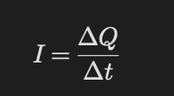
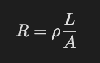
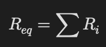
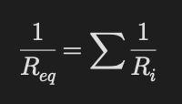

Akım ve Direnç
Temel Mantık
Elektrik akımı yüklerin hareketidir.
Bir iletkende elektronlar hareket ederek akım oluşturur.
Elektrik Akımı

- I → akım
- Q → yük
- t → zaman
Birim:
Amper (A)
Akım Yönü
Akım yönü:
pozitif yüklerin hareket yönü olarak kabul edilir.
Gerçekte elektronlar ters yönde hareket eder.
Ohm Yasası
- V → potansiyel farkı
- I → akım
- R → direnç
Direnç
Direnç akıma karşı gösterilen zorluktur.

- ρ → özdirenç
- L → uzunluk
- A → kesit alanı
Direnci Artıran Şeyler
- Uzunluk artarsa direnç artar
- Kesit alanı azalırsa direnç artar
- Özdirenç artarsa direnç artar
Elektrik Gücü
P=IV
Alternatif:
P=I^2R
Seri Devre
- Akım her yerde aynıdır
- Gerilim paylaşılır
Dirençler:

Paralel Devre
- Gerilim aynıdır
- Akım paylaşılır

Soru Çözme Taktiği
- Seri mi paralel mi belirle.
- Ohm yasasını uygun yerde kullan.
>
- Akım ve gerilim paylaşımını kontrol et.
- Güç sorularında uygun formülü seç.
- Birimleri kontrol et.
Sık Yapılan Hatalar
- Seri ve paraleli karıştırmak
- Akım yönünü yanlış almak
- Güç formüllerini karıştırmak
- Direnç hesabında alanı ters yazmak
- Paralelde akımların eşit olduğunu sanmak